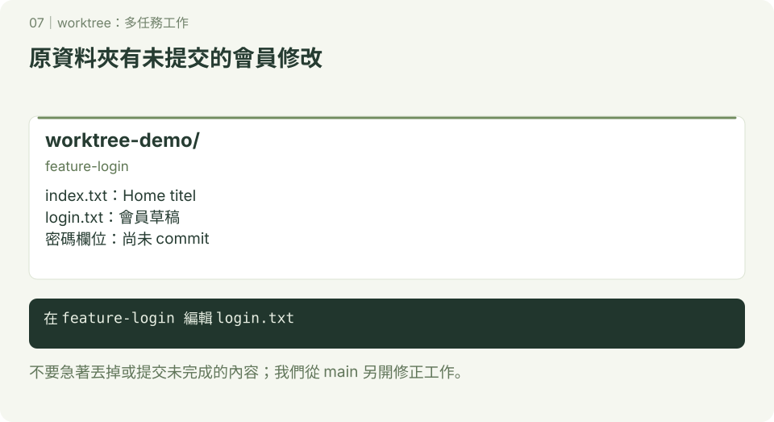
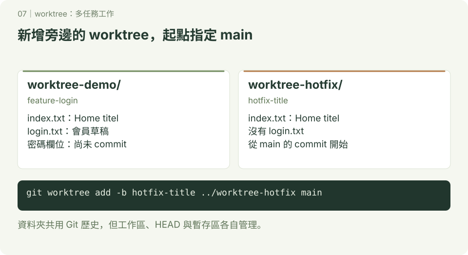
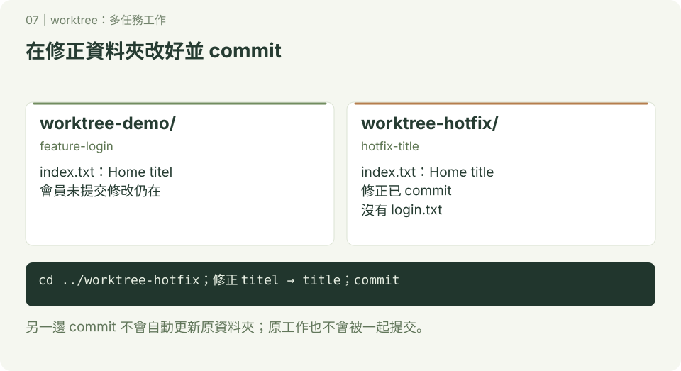
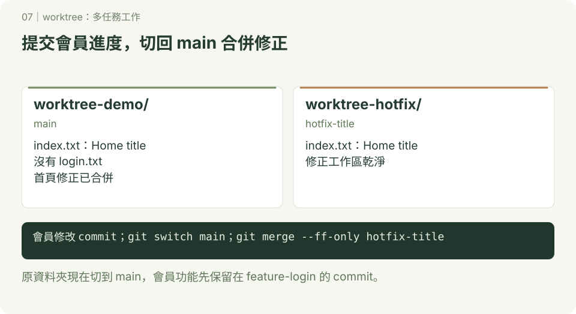
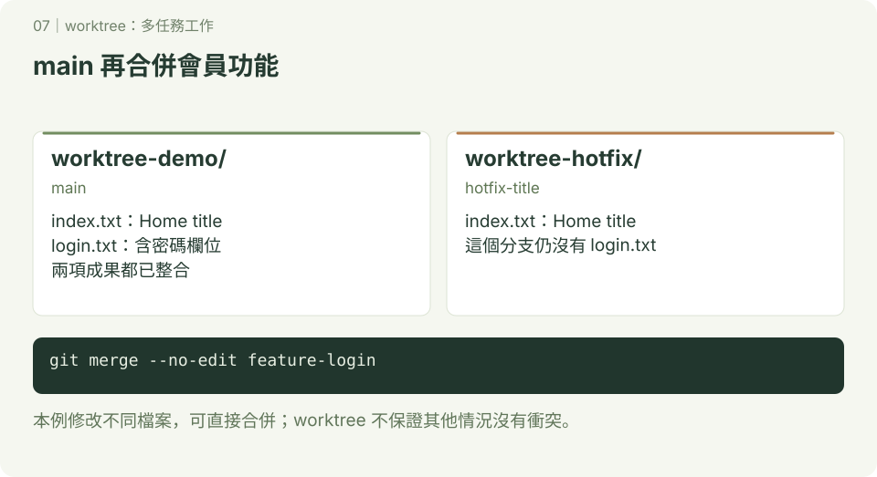
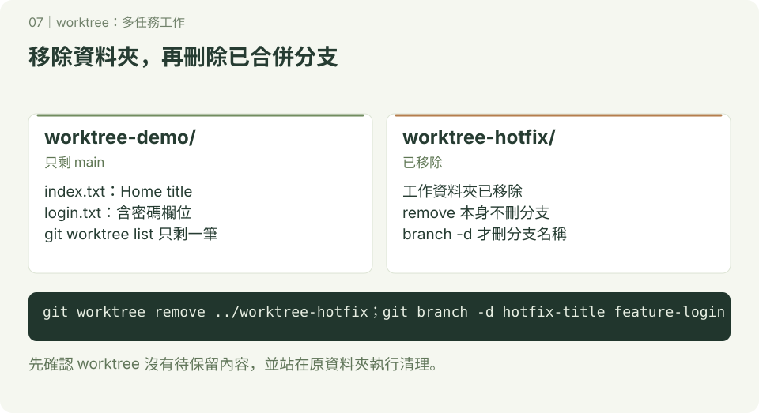

worktree：多任務工作
本章附 SVG 圖解；可先讀 互動版使用說明，再用瀏覽器開啟 docs/index.html#worktree/1，按下一步觀察變化。GitHub 的 README 顯示靜態圖，下載教材後即可離線操作互動版。
學完本章，你可以保留尚未完成的功能，在另一個資料夾修 bug，再把修正合併回主要分支。
1. 什麼時候會用到？
你正在寫會員功能，檔案已經改了，但還沒準備好 commit。這時老師說：「首頁的標題錯了，請先修正。」
如果只有一個工作資料夾，切換分支時可能需要先處理現有修改。worktree 可以替同一個 Git 儲存庫建立另一個工作資料夾，讓你在那裡處理修正，原本的功能檔案繼續留著。
分支記錄開發路線；worktree 提供實際編輯這條路線的資料夾。
| 操作 | 你會看到的變化 |
|---|---|
git branch feature-login | 建立分支，但沒有新增工作資料夾，也沒有切換分支 |
git switch feature-login | 在目前資料夾切換到另一個分支，受追蹤的檔案會依該分支更新 |
git worktree add -b hotfix-title ../worktree-hotfix main | 從 main 建立新分支，並在旁邊新增資料夾，讓兩邊都能工作 |
建立後的資料夾像這樣：
你選的練習位置/
├── worktree-demo/ ← feature-login：繼續寫功能
└── worktree-hotfix/ ← hotfix-title：修首頁標題兩個資料夾共用 commit 紀錄與分支，但各自有自己的檔案、目前位置（HEAD）和暫存區（等待 commit 的內容）。在一邊執行 git add，不會把另一邊尚未提交的修改一起加入。
2. 開始前的準備
- 先完成 開始使用 Git 與 分支 的基本操作。
- 已安裝 Git，並設定 commit 使用的姓名與電子郵件。
- 使用 macOS／Linux 終端機，或 Windows 的 Git Bash。下方檔案操作指令以這些環境為準。
- 在你選的練習位置開啟終端機，確認
worktree-demo與worktree-hotfix兩個資料夾名稱尚未被使用。本練習不用 GitHub 或網路。
本章所有 bash 區塊都是要輸入的指令；text 區塊是預期結果，不用輸入。請依順序做，cd 表示切換資料夾，.. 表示上一層。
3. 實作：功能寫到一半，先去修 bug
步驟一：建立有初始 commit 的專案
操作位置：你選的練習位置。
mkdir worktree-demo
cd worktree-demo
git init -b main
printf 'Home titel\n' > index.txt
git add index.txt
git commit -m "建立首頁"index.txt 故意把 title 拼成 titel，稍後要修正。先有一筆 commit，才有本練習建立新分支的起點。
步驟二：開始會員功能，保留尚未提交的修改

操作位置：worktree-demo。
git switch -c feature-login
printf 'Login form: still working\n' > login.txt
git add login.txt
git commit -m "加入會員功能草稿"
printf 'Login form: add password field\n' >> login.txt
git status --short預期看到（M 前面有一個空白）：
M login.txt這表示 login.txt 有尚未加入暫存區的修改。先保留它，不要 commit，用它觀察 worktree 如何讓你接著處理另一件事。
步驟三：從 main 建立修正用的 worktree

操作位置：仍在 worktree-demo，目前分支是 feature-login。
git worktree add -b hotfix-title ../worktree-hotfix main
git worktree list指令分成四個部分：
| 部分 | 意思 |
|---|---|
git worktree add | 新增一個工作資料夾 |
-b hotfix-title | 同時建立名為 hotfix-title 的新分支 |
../worktree-hotfix | 把資料夾放在目前資料夾的旁邊 |
main | 從 main 的 commit 開始，避免帶入尚未完成的會員功能 |
git worktree list 的結果大致如下；路徑和 commit 編號會不同：
/你的練習位置/worktree-demo abc1234 [feature-login]
/你的練習位置/worktree-hotfix def5678 [hotfix-title]原本資料夾仍在 feature-login。新增 worktree 不會替你切換終端機位置，下一步要自己 cd 過去。
用兩個 VS Code 視窗觀察
如果已安裝 VS Code，可以用選單「檔案 → 新增視窗」，讓第一個視窗開啟 worktree-demo、第二個視窗開啟 worktree-hotfix。使用「開啟資料夾」各自選取，不需要設定 code 指令。
第一個視窗應看到尚未提交的 login.txt 修改；第二個視窗目前只有 index.txt。先猜一猜：在第二個視窗修好首頁並 commit，第一個視窗的首頁會立刻改變嗎？接著做步驟四、五驗證。
每個視窗的終端機也要各自確認位置：pwd 看資料夾，git branch --show-current 看分支。以下文字指令仍以原本的一個終端機依順序操作；不要在兩個終端機交錯複製 cd。
步驟四：在新資料夾修正並提交

cd ../worktree-hotfix
git branch --show-current
ls預期目前分支是 hotfix-title，檔案只有 index.txt，沒有 login.txt。因為這個分支從 main 開始，會員功能只存在於 feature-login。
printf 'Home title\n' > index.txt
git add index.txt
git commit -m "修正首頁標題拼字"
git status --short最後一行沒有輸出，表示這個 worktree 沒有待處理的變更。
步驟五：回原資料夾，確認進度還在
cd ../worktree-demo
git branch --show-current
git status --short
cat login.txt
cat index.txt預期看到：
feature-login
M login.txt
Login form: still working
Login form: add password field
Home titel會員功能的修改還在，首頁也仍是舊拼字。另一個分支完成 commit，不代表目前分支已經收到修正。 接下來才用 merge 整合。
步驟六：完成會員功能，再把修正合併回 main

操作位置：worktree-demo。先完成並提交手上的修改，讓後面的切換步驟容易觀察。
git add login.txt
git commit -m "新增密碼欄位草稿"
git switch main
git merge --ff-only hotfix-title
cat index.txt
ls預期首頁變成 Home title，但 main 還沒有 login.txt。此時只是整合首頁修正。
本例 main 尚未增加其他 commit，因此可以 fast-forward（把分支指標往前移到修正的 commit）；--ff-only 要求 Git 只能用這種方式合併。
步驟七：把會員功能也整合回 main

操作位置：仍在 worktree-demo 的 main 分支。
git merge --no-edit feature-login
cat index.txt
cat login.txt
git log --oneline --graph --all--no-edit 使用預設合併訊息，避免在練習途中開啟訊息編輯器。
預期檔案內容：
Home title
Login form: still working
Login form: add password field兩個分支都從原本的 main 向前開發，這次一般合併會建立 merge commit。本例修改不同檔案，所以不會發生衝突；如果兩個分支修改同一檔案的同一段，仍可能需要手動解決衝突。
步驟八：移除不用的 worktree，再刪除分支

操作位置：worktree-demo 的 main 分支。
git worktree remove ../worktree-hotfix
git branch -d hotfix-title
git branch -d feature-login
git worktree list
git status --short預期只剩 worktree-demo 這個 worktree，分支是 main；status 沒有輸出。
remove 會移除那個工作資料夾與 worktree 登記，不會刪除分支。這裡兩個分支都已合併，所以再用 branch -d 刪除。不要站在準備移除的資料夾裡執行 remove。
4. 常用指令與卡關處理
以下是查詢用的範例，不是接續步驟八全部執行的指令。
| 目的 | 指令 |
|---|---|
| 查看所有 worktree | git worktree list |
| 從 main 建立新分支和資料夾 | git worktree add -b feature-search ../worktree-search main |
| 為已存在的分支建立資料夾 | git worktree add ../worktree-search feature-search |
| 移除已完成的工作資料夾 | git worktree remove ../worktree-search |
新增分支和使用既有分支是兩種選擇：如果 feature-search 已存在，就不要再加 -b。
出現「分支已被使用／already checked out」：一般情況下，同一個分支不能同時在兩個 worktree 中使用。先用 git worktree list 找出它在哪裡，直接進入那個資料夾工作，或替另一項任務建立不同分支。
出現「分支已存在／already exists」：-b 要建立全新分支。如果要使用現有分支，拿掉 -b，使用表格中的既有分支寫法；仍要確認該分支沒有被另一個 worktree 使用。
無法 remove，顯示有修改或未追蹤檔案：先進入該資料夾執行 git status，確認內容，提交要保留的修改，或把仍需要的未追蹤檔案搬到別處，再回到保留的 worktree 移除。不要為了跳過錯誤直接加 --force。
自己刪掉資料夾，但 list 還看得到紀錄：先執行 git worktree prune --dry-run --verbose 檢查，確定是已刪除且不用的資料夾，再執行 git worktree prune --verbose 清除符合條件的失效紀錄。prune 不會找回檔案，也不會清掉正常存在的 worktree；平常請用 remove。
資料夾名稱重複：換一個尚未使用的路徑；不要直接覆蓋現有資料夾。
5. 換你練習
保留步驟八完成的 worktree-demo，再做一次不同任務：
- 從 main 建立
feature-about分支，搭配旁邊的worktree-about資料夾。 - 在新資料夾建立
about.txt，寫下自己的名字並 commit。 - 回到原資料夾，確認 main 還沒有
about.txt。 - 在 main 合併 feature-about，確認
about.txt出現。 - 移除 worktree-about，再刪除已合併的分支。
完成標準：main 有 index.txt、login.txt、about.txt；git worktree list 只剩原本的 worktree。
想一想：
- 步驟三為什麼指定
main當起點，而不是 feature-login？ - 步驟四已經修好首頁，為什麼步驟五還看到舊拼字？
git worktree remove和git branch -d各自移除什麼？
答案提示：起點決定帶入哪些已提交內容；合併才會把另一個分支的成果整合進來；工作資料夾與分支是分開管理的。